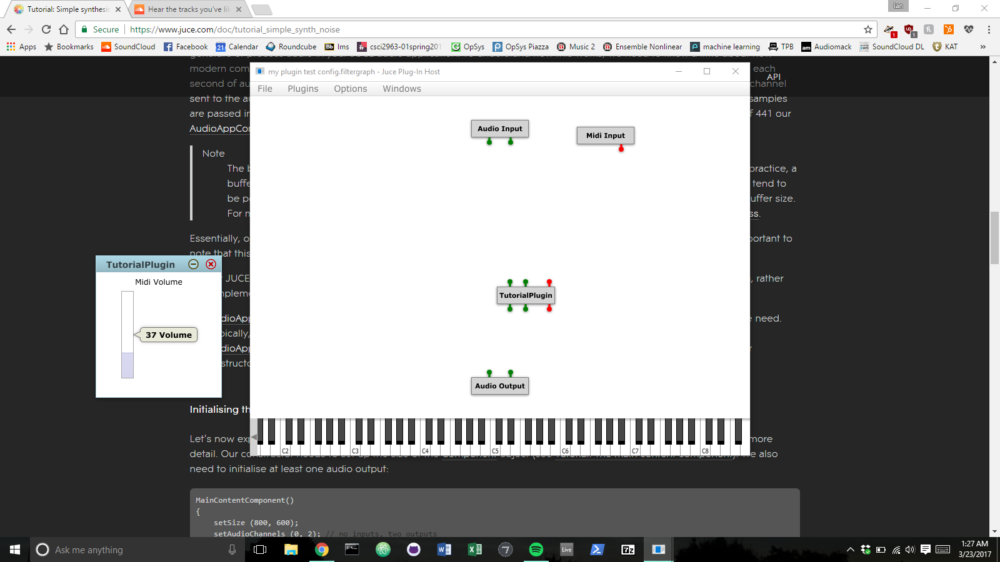
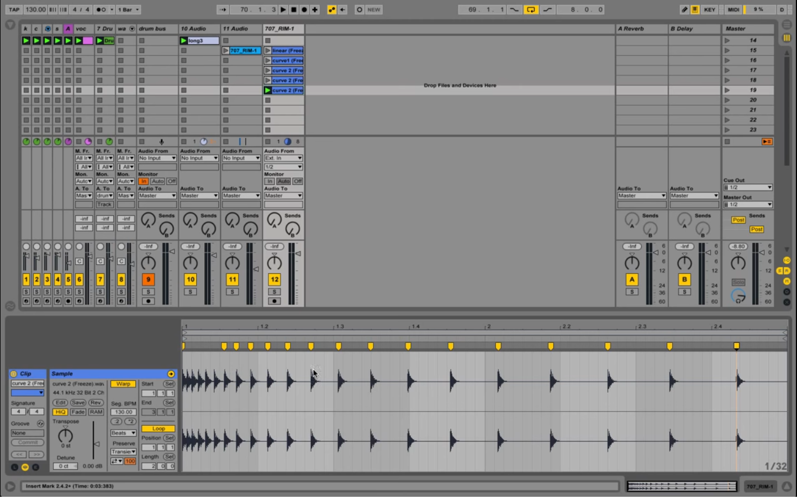

(Project name yet to be decided/ leaning on songizizer, needs to be easier to roll off the toungue)
I went around campus with my Rode Microphone and stand and recorded a lot of soundscapes to run through the patch, you can listen to them here.
My setup was pretty botched with my backpack in the front of my body with my computer on top of it and my focusrite inside while I used the tripod as a boom; I will get a picture if I can.
The documentation for JUCE is not complete, so I am abandoning the goal of making a vst plugin. From now on I am just focusing on finishing the max patch.
I have been busy learning JUCE and coding a bunch of example plugins that are avalible for me to learn.

The goal is to hopefully have a working VST plugin to work with by Thursday.
I just realized now that I had been updating my website here but I kept just commiting the current version to git but not actually pushing it online. Pretty much every time I went to see if my website was up and running, I was just seeing the one on my computer, not the one on git. I found out because I went to the actual website today after who knows how long and I realized how dumb I am lol. It should be fixed now, sorry about the lack of updates .
I didn't do anything...
BUT
I watched an interview of Steve Duda, and he inspired me to work a lot harder on this project and a lot of other things as well.
I then downloaded JUCE, an audio plugin c++ toolkit library for creating VST's and standalong audio programs. I got a little sidetracked going through their tutorials and making a basic sine wave generator and white noise generator with volume control. It is really cool and I think if I really wanted to, once I finish my max patch, I could try to reprogram in in c++/JUCE for vst format. We will see if I have time as we near the end of the semester.
Presentation is done and you can watch it here
In it, I talk a lot about what youve read here, sometimes a little more in depth, but if youve been following along the only thing that might interest you is the fun pictures(there are dancing cats).
Still working on finishiing up max patch and recording audio out. Still havent found out how to manipulate it for song creation. The plan is to work on most of these bugs over spring break.
I got a lot of stuff done, including recieving audio input, sending it to a buffer, and manipulating it. Still trying to work out some kinks, and let me tell you, there are a lot of kinks. Googling things is useful, but too many people who use it are way more advanced than I am so it becomes more of a challenge just trying to find a simple answer to things. It's getting there though; slowly but surely.
It works in a pretty simple automated and albeit a little random manor:
My current max patch is a horrid mess and i dont think it looks good at all; I need to tidy it up a lot. I just only found out how to encapulate things again thursday so I'm going to make a lot of sub patches.
I have to create a presentation for class about my current work and where we are in terms of finishing soon. So that will get posted when it's done.
Max patches are hard. There is a lot of documentation, but everything i think is upposed to work doesnt. It took me about 2 hours to get two numbers to add together. two hours. ADD 2 NUMBERS.
Whatever. I have gone through like 8 or 9 iterations of just trying to input audio. It's so annoying. Do I use buffer~? Do I use sfrecord~? I DONT KNOW!!
I guess the best bet is to just keep troubleshooting. The end result will be cool I just know it.
Once again we have a new song, also took about 4-5 hours in total over this week.
You can listen to it here.
For this one, I went with some stock sounds and drum samples, jusst to allieviate the stress and time wasted from pulling the samples from scratch. I did however use Robert Henke’s Granulator 2 from Ableton's Max for Live patches. Came in pretty handy and the sounds it generated were really nice. I am going to try to implement it somehow in the end result of my program. I'm pretty sure i linked it earlier but here it is again.
I'd say this song sounds good and works pretty well in application, so I think these tests have been a success.
I taked a little earlier about using tapestrea, and I tried it out but it doesn't work on my computer unfortunately. Based on the models I've seen on their website and videos, I can hopefully create something like it in Max. I guess it's time to start creating a max patch to do all of this in real time and save my time. ;)
It took me long enough but I finally completed a song using just the samples chopped from the pipes. It took about 4-5 hours in total over the last week. It was kind of boring to do, simply because it took so long and I'm spoiled from pre made samples, but it was pretty cool and I learned a couple things about chopping up large samples and what to look for when sampling . The end result patch will make everything so much nicer and automated.
You can listen to it here (the only added sound is the maraca).
This was purely created by chopping and manipulating the main sound to create lots of percs and a white noise 808
I want to experiment with logarithmic placement of sounds and midi notes, along with effects such as the repitcher delay and saturation, so next week the plan is to create a new song that utilizes those techniques
I went around campus and recorded some sounds to test on my project:
Over the next couple weeks I am going to try to construct a song using samples just from the raw audio, and then once I can make sure it is a viable option, start working on the main max patch.
I created some test raw audio files:
I plan to store some wav's of specific samples and percs to pattern match to, in nicely ordered folders
in order to stereo-ize this project for use in at least an 8 channel speaker array, I plan to set my routing for the repitcher delays and reverb to be randomized to 8 outputs. Main sounds I would like to pan slowly depending on their frequency (larger panning for highs, less to none for lows)
I realized now that I can just set a defined length for sounds to chop out..
I outlined features I want in my program.
I decided it is going to be a standalone program to output songs instead of a VST. I want to program it in Max, not sure how to turn it into its own UI and such. Using algorithims in nature, I will create a bank of algorithms that sound good(nothing that looks cool, must sound good) to run sound samples through to define how I want the songs to sound.
I'm interested in ending up with songs like autechre, so working with randomness and algorithms is key. I have already experimented with repitching and exponential sound in time with ableton as shown here and heard here.
I realized the hardest thing I might need to do so far is to figure out how to define what makes a sound good. I think I might implement a scale for overall loudness across spectrum, clarity of pitch, amount of artifacts, noise level, and more (I am open to more definitions).
I started looking into prospective technologies to narrow down ideas for my creative project.
Tapestrea looks like a promising starting point. It is a unified framework for interactively analyzing, transforming and synthesizing complex sounds. I also downloaded and played around with Abletons Max for Live plugin, Granulator II for experimentation with granular synthesis. I am considering using this or a similar tool to make sounds from samples for my ending result. I will look into a samping device and how to output clips of sound or live output sound. Also might use midi in to define notes but I also think it should be randomized to a point so im not sure yet.
I also found this website for making vst's.